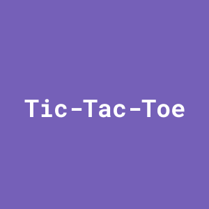

-

KEA Restaurant
HTML & SCSS
This website served as an assignment for User Experience, a course taken in the first semester of BA studies, where I had to create a website for the fictive restaurant for KEA, which contains an introduction, menu overview, and the location.
-

William Shakespeare
HTML & CSS
Same as the previous website, the William Shakespeare served as an assignment for the first semester's course, User Experience, where I had to build by using different CSS properties, the grid property being used to construct this website.
-

Music CDs
HTML, CSS & Javascript
The music CDs website gives the possibility to the user to add the name of the song, the artist, and the year the song made its appearance, it also served as a school assignment, where Javascript was used for the functions of the website.
-

Tic-Tac-Toe
HTML, CSS & Javascript
A simple website that I did to practice Javascript, where the user can play Tic Tac Toe with their friend or sibling.
-

The Other Nuub
React, SQL & PHP
This site project served as the final exam of my bachelor programme, where not only I came up with a new and fresh design for Nuub, but also to add a feature for the clients to schedule, modify and cancel their appointments, but with the requirement of having an account.